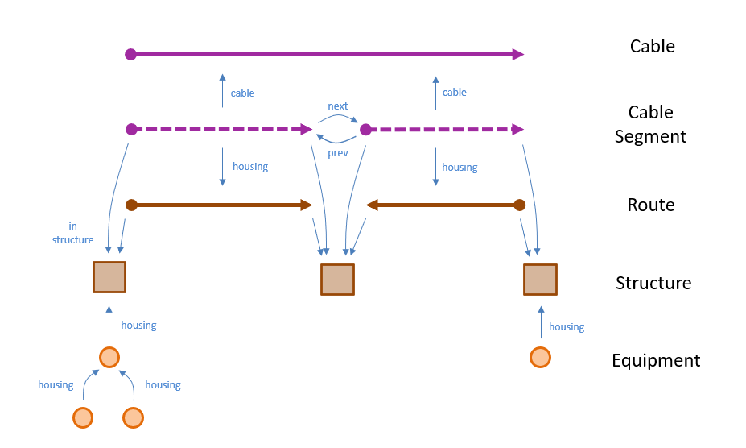

Containment Model
The following figure shows the Network Manager containment model.

Figure: Containment Model
Network Manager objects are divided into top level objects and contained objects. Top level objects are positioned by the user on the map. Contained objects inherit their location from their housing.
Top level objects are:
-
Structure: A point object modeling a building, manhole, pole, and so on. It can be connected to other structures through routes and can house equipment and cable segments. Administrators can add their own structure types.
-
Route: A linear object modeling a path between two structures. It holds a reference to its start structure and end structure. It may correspond to a physical object (for example, strand messenger wire) or something conceptual (for example, a trench path). A route can house cable segments and conduits. Its direction is not important. Administrators can add their own route types.
Contained objects are:
-
Cable: A cable consists of an ordered list of cable segments. It inherits its geometry from those segments. For directed cables, the direction of the geometry is important. Connections can be made at any segment along the cable (not just at its end points). Administrators can define their own cable types.
-
Cable Segment: A cable segment models a section of cable between two structures. It holds a reference to the cable of which it is a part and the route or conduit that houses it. It also holds references to the previous and next segment in its chain and the top level object in which it is housed (its root_housing). Its geometry is inherited from its root_housing (but may differ in direction).
A cable segment housed within a single structure is said to be an internal segment. Internal segments are used to model portions of cable within the structure such as slacks and risers.
Cable segment is a system object. There is currently only one type in the system.
-
Conduit: A conduit models a tube running between two structures. It stores a reference to its start and end structure and to the route that houses it (its root_housing). Its geometry is inherited from its root_housing. Conduit types declared as continuous additionally store references to the previous and next conduit in the chain.
Conduits can be housed directly within a route or within another conduit. Their use is optional. Administrators can define their own conduit types.
-
Equipment: An equipment object models a signal carrying device (splitter, mux, and so on) or enclosure (splice closure, rack, room, and so on). It inherits its geometry from the structure in which it is located (its root_housing).
Equipment can be housed directly within a structure or within another equipment. Administrators can define their own equipment types.
For details about the data stored on each object type, see Data Model (User-level Objects).